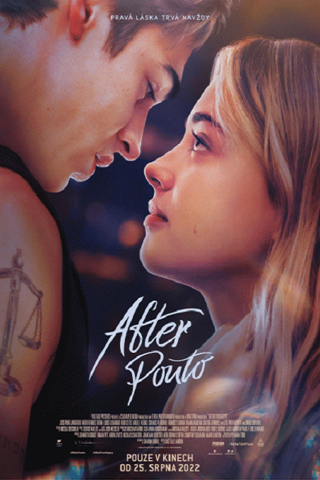

After Pouto
After Ever Happy
2022
DRAMA
ROMANTICKÉ
 DABING
DABING
DABING
Čtvrtý díl romantické ságy začíná přesně tam, kde předešlý díl skončil. V Londýně na svatbě Hardinovy matky. S šokujícím odhalením toho, kdo je jeho otec, se Hardin nemůže smířit a začíná se propadat do temnoty své duše a do pití. Tessa odjíždí zpět do Ameriky a poté, co ji potká osobní tragédie, Hardin přijíždí, aby jí dodal podporu. Je už ale příliš nevyzpytatelný a boj s vlastními démony ho pohltil natolik, že situaci jen zhorší a jejich křehký vztah dovede až na samou hranu. Tessa si uvědomuje, že přes veškerou lásku a touhu, kterou k Hardinovi cítí, přišel čas, kdy musí myslet na sebe, na své štěstí a kdy musí budovat svůj vlastní život. Odjíždí pryč do New Yorku začít znovu. Rozervaný Hardin se po nějaké době odhodlá o Tessu znovu bojovat, ale může být už pozdě. Tessa dávno není nevinná studentka, uvědomuje si své možnosti v životě a možná umí být stejně krutá, jako býval kdysi Hardin. Vždy, když se potkají, vášeň je silnější než oni a nemohou jí odolat. Je ale jejich láska taková, aby za ni bojovali za každou cenu?